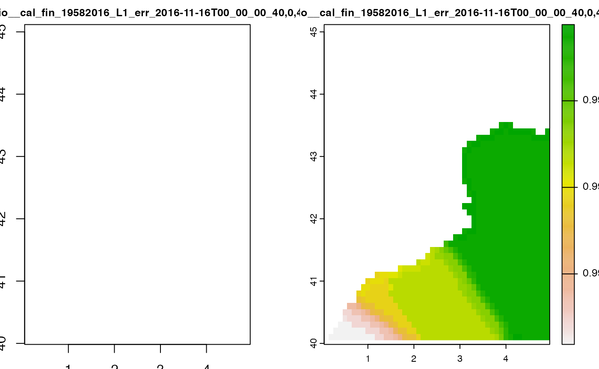

WCS Basics
The Web Coverage Service (WCS) is a standard issued by the Open Geospatial Consortium (OGC). It is designed to simplify remote access to coverages, commonly known as raster maps in GIS. WCS functions over the HTTP protocol, setting out how to obtain data and meta-data using the requests available in the protocol. In practice it allows metadata and raster maps to be obtained from a web browser or from any other programme that uses the protocol.
An important distinction must be made between WCS and Web Map Service (WMS). They are similar, and can return similar formats, but a WCS is able to return more information, including valuable metadata and more formats. It additionally allows more precise queries, potentially against multi-dimensional backend formats.
The WCS standard is composed by three core requests, each with a particular purpose:
-
GetCapabilities: This request provides information on a particular service. -
DescribeCoverage: This request To provides more detailed information about a particular coverage. -
GetCoverage: This request that actually obtains coverage data.
WCS requests are handled in EMODnetWCS through package ows4R. ows4R uses R6 classes and implements an encapsulated object-oriented programming paradigm which may be unfamiliar to some R users. EMODnetWCS wraps ows4R and aims to provide more familiar workflows and return more familiar, usable and easy to review outputs. It also provides checks and validations to ensure smooth and easy interaction with EMODnet WCS services. You can however use ows4R with any of the EMODnet WCS endpoints if you prefer.
EMODnet WCS Services
The EMODnet portals provide a number of Web Coverage Services (WCS) to support requests for coverage data (rasters) or gridded data products.
Available services
To view the available services and their endpoints, you can use emdn_wcs()
library(EMODnetWCS)
#> Loading required package: ows4R
#> Loading required package: geometa
#> Loading ISO 19139 XML schemas...
#> Loading ISO 19115 codelists...
#> Loading IANA mime types...
#> IANA website not reachable, skipping IANA mime types loading...
#> Loading required package: keyring
emdn_wcs()
#> # A tibble: 5 × 2
#> service_name service_url
#> <chr> <chr>
#> 1 bathymetry https://ows.emodnet-bathymetry.eu/wcs
#> 2 biology https://geo.vliz.be/geoserver/Emodnetbio/wcs
#> 3 human_activities https://ows.emodnet-humanactivities.eu/wcs
#> 4 physics https://geoserver.emodnet-physics.eu/geoserver/wcs
#> 5 seabed_habitats https://ows.emodnet-seabedhabitats.eu/geoserver/emodnet_open…The service_name column contains the service names that can be used to establish connections and make requests to EMODnet WCS services.
Connecting to EMODnet WCS Services
Before we can make requests to any of the services, we first need to create new WCS Client. We specify the service we want to connect to using the service argument.
wcs <- emdn_init_wcs_client("biology")
#> ✔ WCS client created succesfully
#> ℹ Service: <https://geo.vliz.be/geoserver/Emodnetbio/wcs>
#> ℹ Service: "2.0.1"There are options for logging additional messages arising from ows4R and the underlying libculrl/curl library through argument logger. These can be useful in trouble shooting issues.
There are 3 levels of potential logging:
-
'NONE'(the default) for no logger. -
'INFO'includesows4Rlogs. -
'DEBUG'for all internal logs (such as as Curl details)
The following example sets the logger to "DEBUG".
wcs <- emdn_init_wcs_client("biology", logger = "DEBUG")
#> [ows4R][INFO] OWSGetCapabilities - Fetching https://geo.vliz.be/geoserver/Emodnetbio/wcs?service=WCS&version=2.0.1&request=GetCapabilities
#> ✔ WCS client created succesfully
#> ℹ Service: <https://geo.vliz.be/geoserver/Emodnetbio/wcs>
#> ℹ Service: "2.0.1"The emdn_init_wcs_client() functions returns an R6 object of class <WCSClient>.
wcs
#> <WCSClient>
#> Inherits from: <OWSClient>
#> Public:
#> attrs: list
#> capabilities: WCSCapabilities, OWSCapabilities, OGCAbstractObject, R6
#> clone: function (deep = FALSE)
#> defaults: list
#> describeCoverage: function (identifier)
#> element: AbstractObject
#> encode: function (addNS = TRUE, geometa_validate = TRUE, geometa_inspire = FALSE,
#> ERROR: function (text)
#> getCapabilities: function ()
#> getCASUrl: function ()
#> getClass: function ()
#> getClassName: function ()
#> getConfig: function ()
#> getCoverage: function (identifier, bbox = NULL, crs = NULL, time = NULL, format = NULL,
#> getHeaders: function ()
#> getNamespaceDefinition: function (recursive = FALSE)
#> getPwd: function ()
#> getToken: function ()
#> getUrl: function ()
#> getUser: function ()
#> getVersion: function ()
#> INFO: function (text)
#> initialize: function (url, serviceVersion = NULL, user = NULL, pwd = NULL,
#> isFieldInheritedFrom: function (field)
#> logger: function (type, text)
#> loggerType: DEBUG
#> namespace: OWSNamespace, R6
#> reloadCapabilities: function ()
#> url: https://geo.vliz.be/geoserver/Emodnetbio/wcs
#> verbose.debug: TRUE
#> verbose.info: TRUE
#> version: 2.0.1
#> WARN: function (text)
#> wrap: FALSE
#> Private:
#> cas_url: NULL
#> config: request
#> fromComplexTypes: function (value)
#> headers: EMODnetWCS R package https://github.com/EMODnet/EMODnetWCS
#> pwd: NULL
#> serviceName: WCS
#> system_fields: verbose.info verbose.debug loggerType wrap element names ...
#> token: NULL
#> user: NULL
#> xmlElement: AbstractObject
#> xmlExtraNamespaces: NULL
#> xmlNamespacePrefix: OWS
#> xmlNodeToCharacter: function (x, ..., indent = "", tagSeparator = "\n")You can use any of the methods provided within the class should you wish (see ows4R documentation for details).
wcs$getUrl()
#> [1] "https://geo.vliz.be/geoserver/Emodnetbio/wcs"
wcs$loggerType
#> [1] "DEBUG"However EMODnetWCS provides a host of functions for extracting/compiling useful metadata in a variety of forms as well downloading raster data from EMODnetWCS service which you will likely find easier to work with.
Here are some examples of functionality provided by EMODnetWCS. For more details see the relevant vignette.
Getting Metadata
Get service level and a subset of coverage level metadata, compiled for easy review.
emdn_get_wcs_info(wcs = wcs)
#> Loading required package: sf
#> Linking to GEOS 3.10.2, GDAL 3.4.2, PROJ 8.2.1; sf_use_s2() is TRUE
#> $data_source
#> [1] "emodnet_wcs"
#>
#> $service_name
#> [1] "biology"
#>
#> $service_url
#> [1] "https://geo.vliz.be/geoserver/Emodnetbio/wcs"
#>
#> $service_title
#> [1] "EMODnet Biology"
#>
#> $service_abstract
#> [1] "The EMODnet Biology products include a set of gridded map layers showing the average abundance of marine species for different time windows (seasonal, annual) using geospatial modelling. The spatial modelling tool used to calculate the gridded abundance maps is based on DIVA. DIVA (Data-Interpolating Variational Analysis) is a tool to create gridded data sets from discrete point measurements of the ocean. For the representation of time dynamics, it was decided to produce gridded maps for sliding time windows, e.g. combining one or more years in one gridded map, so that relatively smooth animated GIF presentations can be produced that show the essential change over time. EMODnet Biology’s data products include the Operational Ocean Products and Services (OOPS), harvested by ICES."
#>
#> $service_access_constraits
#> [1] "NONE"
#>
#> $service_fees
#> [1] "NONE"
#>
#> $service_type
#> [1] "urn:ogc:service:wcs"
#>
#> $coverage_details
#> # A tibble: 10 × 9
#> coverage_id dim_n dim_n…¹ extent crs wgs84…² tempo…³ verti…⁴ subtype
#> <chr> <int> <chr> <chr> <chr> <chr> <chr> <chr> <chr>
#> 1 Emodnetbio__ratio… 3 lat(de… -75.0… EPSG… -75.05… 1958-0… NA Rectif…
#> 2 Emodnetbio__aca_s… 3 lat(de… -75.0… EPSG… -75.05… 1958-0… NA Rectif…
#> 3 Emodnetbio__cal_f… 3 lat(de… -75.0… EPSG… -75.05… 1958-0… NA Rectif…
#> 4 Emodnetbio__cal_h… 3 lat(de… -75.0… EPSG… -75.05… 1958-0… NA Rectif…
#> 5 Emodnetbio__met_l… 3 lat(de… -75.0… EPSG… -75.05… 1958-0… NA Rectif…
#> 6 Emodnetbio__oit_s… 3 lat(de… -75.0… EPSG… -75.05… 1958-0… NA Rectif…
#> 7 Emodnetbio__tem_l… 3 lat(de… -75.0… EPSG… -75.05… 1958-0… NA Rectif…
#> 8 Emodnetbio__chli_… 3 lat(de… -75.0… EPSG… -75.05… 1958-0… NA Rectif…
#> 9 Emodnetbio__tot_l… 3 lat(de… -75.0… EPSG… -75.05… 1958-0… NA Rectif…
#> 10 Emodnetbio__tot_s… 3 lat(de… -75.0… EPSG… -75.05… 1958-0… NA Rectif…
#> # … with abbreviated variable names ¹dim_names, ²wgs84_bbox, ³temporal_extent,
#> # ⁴vertical_extentGet more detailed coverage metadata about specific coverage.
emdn_get_coverage_info(wcs, coverage_ids = c(
"Emodnetbio__ratio_large_to_small_19582016_L1_err",
"Emodnetbio__cal_fin_19582016_L1_err"
)
)
#> # A tibble: 2 × 21
#> data_s…¹ servi…² servi…³ cover…⁴ band_…⁵ band_…⁶ const…⁷ nil_v…⁸ dim_n dim_n…⁹
#> <chr> <chr> <chr> <chr> <chr> <chr> <chr> <dbl> <int> <chr>
#> 1 emodnet… https:… biology Emodne… Relati… W.m-2.… -3.402… 9.97e36 3 lat(de…
#> 2 emodnet… https:… biology Emodne… Relati… W.m-2.… -3.402… 9.97e36 3 lat(de…
#> # … with 11 more variables: grid_size <chr>, resolution <chr>, extent <chr>,
#> # crs <chr>, wgs84_extent <chr>, temporal_extent <chr>,
#> # vertical_extent <chr>, subtype <chr>, fn_seq_rule <chr>,
#> # fn_start_point <chr>, fn_axis_order <chr>, and abbreviated variable names
#> # ¹data_source, ²service_name, ³service_url, ⁴coverage_id, ⁵band_description,
#> # ⁶band_uom, ⁷constraint, ⁸nil_value, ⁹dim_namesThe package offers a number of functions for extracting individual metadata in more usable forms. e.g.
emdn_get_coverage_ids(wcs)
#> [1] "Emodnetbio__ratio_large_to_small_19582016_L1_err"
#> [2] "Emodnetbio__aca_spp_19582016_L1"
#> [3] "Emodnetbio__cal_fin_19582016_L1_err"
#> [4] "Emodnetbio__cal_hel_19582016_L1_err"
#> [5] "Emodnetbio__met_luc_19582016_L1_err"
#> [6] "Emodnetbio__oit_spp_19582016_L1_err"
#> [7] "Emodnetbio__tem_lon_19582016_L1_err"
#> [8] "Emodnetbio__chli_19582016_L1_err"
#> [9] "Emodnetbio__tot_lar_19582016_L1_err"
#> [10] "Emodnetbio__tot_sma_19582016_L1_err"For more details, please refer to the Getting metadata about Services & Coverages article in the EMODnetWCS online documentation.
Downloading Coverages
The package also provides a function to download full or subsets of coverages from EMODnetWCS services.
The following example downloads a spatial subset of a coverage using a bounding box.
cov <- emdn_get_coverage(wcs,
coverage_id = "Emodnetbio__cal_fin_19582016_L1_err",
bbox = c(xmin = 0,
ymin = 40,
xmax = 5,
ymax = 45)
)
#> ── Downloading coverage "Emodnetbio__cal_fin_19582016_L1_err" ──────────────────
#> <GMLEnvelope>
#> ....|-- lowerCorner: 40 0 "1958-02-16T00:00:00"
#> ....|-- upperCorner: 45 5 "2016-11-16T00:00:00"
#>
#> ✔ Coverage "Emodnetbio__cal_fin_19582016_L1_err" downloaded succesfully as a
#> terra <SpatRaster>
cov
#> class : SpatRaster
#> dimensions : 50, 49, 2 (nrow, ncol, nlyr)
#> resolution : 0.1, 0.1 (x, y)
#> extent : 0.05, 4.95, 40.05, 45.05 (xmin, xmax, ymin, ymax)
#> coord. ref. : lon/lat WGS 84 (EPSG:4326)
#> source : Emodnetbio__cal_fin_19582016_L1_err_2016-11-16T00_00_00.000Z_40,0,45,5.tif
#> names : Emodnetbio__cal~00Z_40,0,45,5_1, Emodnetbio__cal~00Z_40,0,45,5_2
terra::plot(cov)
#> Warning in .as.raster.classes(out, x): NAs introduced by coercion to integer
#> range
#> Warning in .get_breaks(Z, length(out$cols), "eqint", out$range): probable
#> complete loss of accuracy in modulus
For more details on downloading coverages, please refer to the Download Coverages article in the EMODnetWCS online documentation.